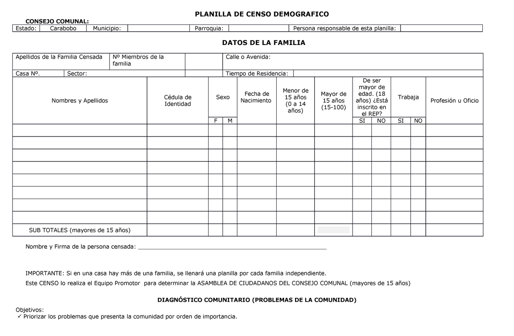

Modelo de Censo Comunitario y Registro de Miembros de la Comunidad Indígena Wayuu
CENSO COMUNITARIO Y REGISTRO DE MIEMBROS
Comunidad Indígena Wayuu [Nombre de la Comunidad]
Fecha: [Día/Mes/Año] Lugar: [Territorio o Localidad de la Comunidad]1. Información General de la Comunidad:
Nombre de la Comunidad: Comunidad Indígena Wayuu [Nombre de la Comunidad]
Domicilio: [Dirección específica dentro del territorio ancestral wayuu]
Número de Familias Registradas: [Total de Familias]
Número Total de Miembros: [Total de Miembros]
2. Registro de Familias y Miembros:
3. Resumen de Datos Demográficos:
Total de Hombres: [Número]Total de Mujeres: [Número]
Total de Niños (0-12 años): [Número]
Total de Jóvenes (13-18 años): [Número]
Total de Adultos (19-60 años): [Número]
Total de Adultos Mayores (>60 años): [Número]
5. Firmas de Autenticación:
Los abajo firmantes, líderes y representantes de la Comunidad Indígena Wayuu [Nombre de la Comunidad], certifican que la información contenida en este censo es correcta y corresponde a los miembros actuales de nuestra comunidad.
Líder Principal: Nombre Completo: [Nombre del Líder]
Documento de Identidad: [Número de Documento]
Firma: [Firma del Líder]
Consejo de Ancianos: 1: Nombre Completo: [Nombre del Anciano]
Documento de Identidad: [Número de Documento]
Firma: [Firma del Anciano]
2: Nombre Completo: [Nombre del Anciano]
Documento de Identidad: [Número de Documento]
Firma: [Firma del Anciano]
3:Nombre Completo: [Nombre del Anciano]
Documento de Identidad: [Número de Documento]
Firma: [Firma del Anciano]
6. Testigos:
1: Nombre Completo: [Nombre del Testigo]Documento de Identidad: [Número de Documento]
Firma: [Firma del Testigo]
2: Nombre Completo: [Nombre del Testigo]
Documento de Identidad: [Número de Documento]
Firma: [Firma del Testigo]